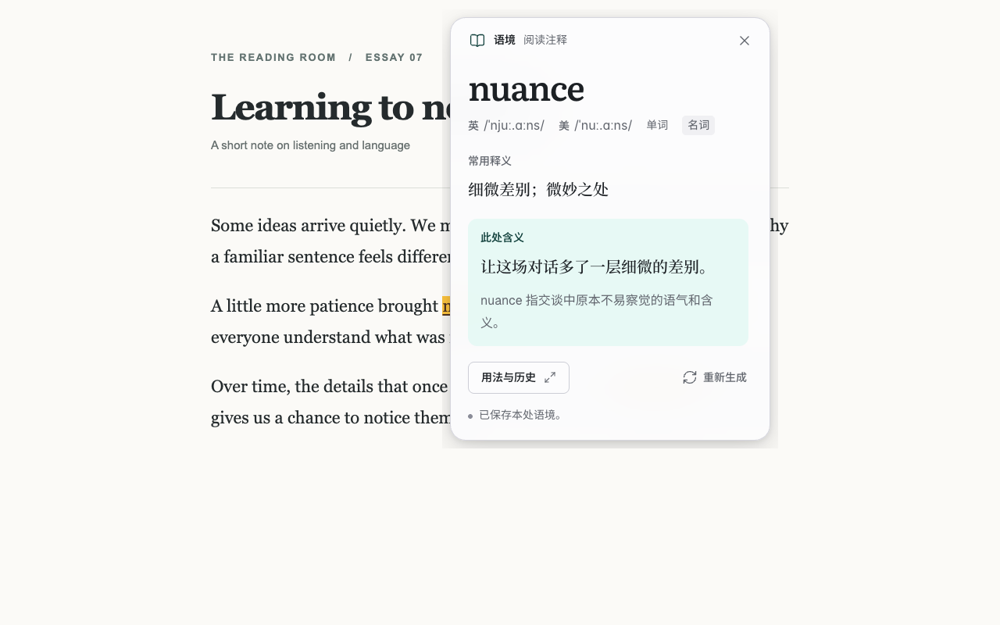

理解当下的语境
按需解释单词、短语和句段；再次遇到已收录的表达，也可以为新语境添加解释。
保留自己的积累
查看、搜索和修订知识库，保留历史语境。可以导出备份，也可以选择连接自己的 Google Drive 同步。
选择连接方式
连接自己选择的模型服务，或使用符合服务要求的 ChatGPT 账号。登录组件仅许可非商业用途。
你的阅读数据
阅读标记和历史使用本机保存的资料。只有你主动请求解释时，扩展才会向你选择的模型服务发送选区和有限上下文。Google Drive 同步需要你自己连接并授权。
阅读完整数据说明